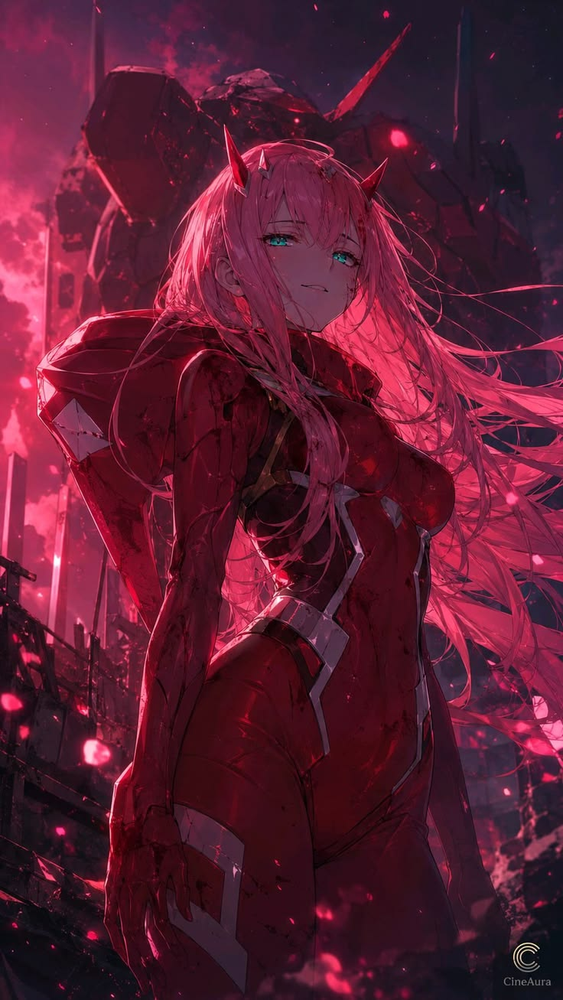

Critique:
Color Over-Saturation: Because almost every element utilizes shades of pink and red, subtle background details and clothing textures bleed into one another, slightly muddying the overall contrast.
Distracting Corner Logo: The circular emblem and "CineAura" branding in the bottom-right corner divert attention away from the lower half of the illustration.
Praise:
Atmospheric Color Immersion: Saturating the image in deep crimson and magenta tones creates a moody, high-stakes cinematic ambiance that blends sci-fi elements with raw emotion.
Sharp Rim Lighting: Bright pink edge highlights trace the contours of the character's long flowing hair and plugsuit, cleanly separating her form from the giant, dark mecha standing in the background.
Scale-Establishing Background: The looming silhouette of the giant robot adds architectural interest and enriches the scene's narrative context.